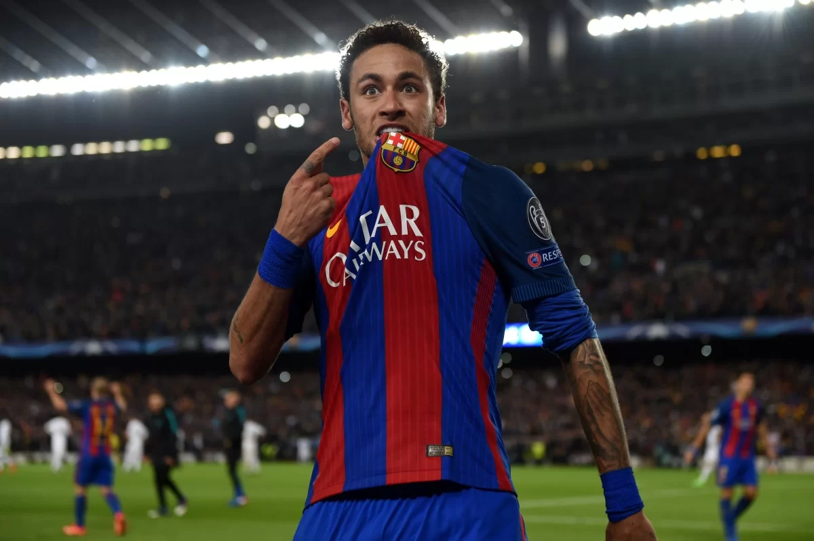

a dos torcedores.
lucas febraio,kaua henrique, adan e kevin
História de Neymar no Barcelona

Neymar Jr. juntou-se ao Barcelona em 2013, formando uma parceria de ataque formidável com Lionel Messi e Luis Suárez, conhecida como "MSN". Sua habilidade excepcional, dribles desconcertantes e gols espetaculares contribuíram significativamente para o sucesso do Barcelona durante sua estadia.
Na temporada de estreia, Neymar ajudou o Barcelona a conquistar o tão desejado triplete: La Liga, Copa del Rey e Liga dos Campeões da UEFA, na temporada 2014-2015.
A parceria MSN foi destacada pela incrível sintonia entre Messi, Suárez e Neymar, resultando em uma abundância de gols e jogadas memoráveis.
Em 2015, Neymar foi indicado ao prêmio Ballon d'Or da FIFA, demonstrando seu impacto significativo no cenário mundial.
Sua última temporada no Barcelona em 2016-2017 viu mais conquistas, incluindo a Copa del Rey.
Após quatro temporadas de sucesso, Neymar partiu para o Paris Saint-Germain em uma transferência recorde em 2017.
A passagem de Neymar pelo Barcelona é lembrada como uma era de glória, com seu estilo de jogo único e contribuições cruciais para as vitórias do clube. Sua jornada internacional continuou, mas sua marca no Barcelona permanece viva na memória dos torcedores.
VEJA UM VIDEO MOSTRANDO SUA INCRIVEL HABILIDADE MOSTRADA NESTE CLUBE